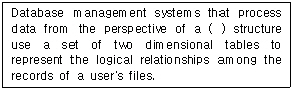
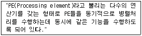
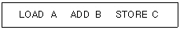
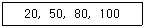
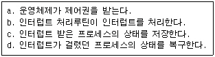
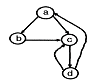
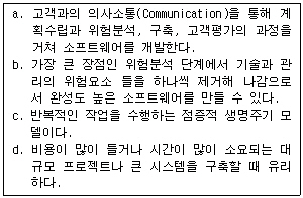
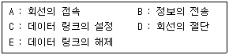

정보처리기사(구) (2004-05-23 기출문제)
1과목: 데이터 베이스
1. 해싱함수(Hashing Function)의 종류가 아닌 것은?
- 제곱(mid-square) 방법
- 숫자분석(digit analysis) 방법
- 체인(chain) 방법
- 제산(division) 방법
(정답률: 52%)

2. 하나의 애트리뷰트가 가질 수 있는 값을 총칭하여 무엇이라 하는가?
- 튜플
- 릴레이션
- 도메인
- 엔티티
(정답률: 52%)
3. 개념 스키마(conceptual schema)에 대한 설명으로 옳지 않은 것은?
- 단순히 스키마(schema)라고도 한다.
- 범기관적 입장에서 데이터베이스를 정의한 것이다.
- 모든 응용시스템과 사용자가 필요로 하는 데이터를 통합한 조직 전체의 데이터베이스로 하나만 존재한다.
- 개개 사용자나 응용 프로그래머가 접근하는 데이터베이스를 정의한 것이다.
(정답률: 57%)
4. STUDENT 테이블을 생성한 후, GENDER 필드가 누락되어 이를 추가하려고 한다. 이에 적합한 SQL 명령어는?
- CREATE
- ALTER
- ADD
- MODIFY
(정답률: 62%)
5. 분산 데이터베이스의 장점으로 거리가 먼 것은?
- 지역 자치성이 높다.
- 효용성과 융통성이 높다.
- 점증적 시스템 용량 확장이 용이하다.
- 소프트웨어 개발 비용이 저렴하다.
(정답률: 87%)
6. A은행에서B 라는 사람이 고객 인증 절차를 거쳐 잔액을 조회한 후 타인에게 송금하는 도중에 장애가 발생하였을 경우 문제가 발생한다. 이러한 경우의 부작용을 방지할 수 있는 트랜잭션의 특성은?
- 일관성(Consistency)
- 고립성(Isolation)
- 지속성(Duration)
- 원자성(Atomicity)
(정답률: 55%)
7. 릴레이션의 성질(property)로 적합한 것은?
- 중복된 튜플이 존재한다.
- 튜플 간의 순서가 정의된다.
- 속성 간의 순서가 정의된다.
- 모든 속성 값은 원자값이다.
(정답률: 77%)
8. 비선형 자료 구조에 해당하는 것은?
- 큐(Queue)
- 데크(Deque)
- 그래프(Graph)
- 리스트(List)
(정답률: 75%)
9. E-R 모델의 그래픽 표현으로 옳지 않은 것은?
- 개체타입 - 오각형
- 관계타입 - 마름모
- 속성 - 원
- 연결 - 선
(정답률: 88%)
10. SQL에서 각 기능에 대한 내장함수의 연결이 옳지 않은 것은?
- 열에 있는 값들의 개수 - COUNT
- 열에 있는 값들의 평균 - AVG
- 열에 있는 값들의 합 - TOT
- 열에서 가장 큰 값 - MAX
(정답률: 78%)
11. 데이터베이스 관리 시스템(DBMS)에서 제어 기능에 대한 설명으로 거리가 먼 것은?
- 데이터의 무결성 유지
- 갱신, 삽입, 삭제 등의 연산
- 보안 유지와 권한 검사
- 정확성 유지를 위한 병행 제어
(정답률: 56%)
12. 해싱(hashing)에 관한 설명으로 옳지 않은 것은?
- 버킷(bucket)이란 하나의 주소를 갖는 파일의 한 구역을 의미하며, 버킷의 크기는 같은 주소에 포함될 수 있는 레코드의 수를 의미한다.
- 슬롯(slot)이란 한 개의 레코드를 저장할 수 있는 공간으로 n개의 슬롯이 모여 하나의 버킷을 형성한다.
- 충돌(collision)이란 레코드를 삽입할 때 2개의 상이한 레코드가 똑같은 버킷으로 해싱되는 것을 의미한다.
- 해싱은 충돌(collision)이 발생하면 항상 오버플로가 발생한다.
(정답률: 77%)
13. 스택의 응용 분야와 거리가 먼 것은?
- 운영체제의 작업 스케줄링
- 함수 호출의 순서 제어
- 인터럽트의 처리
- 수식의 계산
(정답률: 66%)
14. SQL 구문과 의미가 잘못 연결된 것은?
- CREATE - 테이블 생성
- DROP - 레코드 삭제
- UPDATE - 자료 갱신
- DESC - 내림차순 정렬
(정답률: 70%)
15. 테이블에서 특정 속성에 해당하는 열을 선택하는데 사용되며 결과로는 릴레이션의 수직적 부분 집합에 해당하는 관계 대수 연산자는?
- project 연산자
- join 연산자
- division 연산자
- select 연산자
(정답률: 42%)
16. 개체-관계(E-R) 모델에 대한 설명으로 잘못된 것은?
- E-R 다이어그램으로 표현하며 P. Chen이 제안했다.
- 일 대 일(1:1) 관계 유형만을 표현할 수 있다.
- 개체 타입과 이들 간의 관계 타입을 이용해 현실 세계를 개념적으로 표현한 방법이다.
- E-R 다이어그램은 E-R 모델을 그래프 방식으로 표현한 것이다.
(정답률: 82%)
17. What is the quantity of tuples in consist of the relation?
- Degree
- Instance
- Domain
- Cardinality
(정답률: 68%)
18. 다음 영문의 괄호에 적합한 database system은?

- hierarchical database
- network database
- relational database
- object-oriented database
(정답률: 70%)
19. 데이터베이스 설계 순서로 옳은 것은?
- 요구 조건 분석 → 개념적 설계 → 논리적 설계 → 물리적 설계 → 구현
- 요구 조건 분석 → 논리적 설계 → 개념적 설계 → 물리적 설계 → 구현
- 요구 조건 분석 → 논리적 설계 → 물리적 설계 → 개념적 설계 → 구현
- 요구 조건 분석 → 개념적 설계 → 물리적 설계 → 논리적 설계 → 구현
(정답률: 87%)
20. DBMS의 필수기능 중에서 데이터의 논리적 구조와 물리적 구조 사이의 변환이 가능하도록 두 구조 사이의 사상(Mapping)을 명세하여 하나의 물리적 구조로 여러 응용프로그램이 요구하는 데이터 구조를 지원하게 하는 것은 어떤 기능에 포함되는가?
- 정의기능
- 조작기능
- 사상기능
- 제어기능
(정답률: 51%)
2과목: 전자 계산기 구조
21. 컴퓨터에서 사용하는 명령어의 기능이 아닌 것은?
- 전달 기능
- 제어 기능
- 연산 기능
- 번역 기능
(정답률: 80%)
22. 프로그래머가 어셈블리(assembly)언어로 프로그램을 작성할 때 반복되는 일련의 같은 연산을 효과적으로 프로그램하기 위해서 필요한 것은?
- micro-programming
- macro
- function
- revised instruction set
(정답률: 69%)
23. 다음 인터럽트 중에서 우선순위가 가장 높은 것은?
- 외부 신호
- 프로그램
- 기계 이상
- 전원 이상
(정답률: 66%)
24. I/O bus에 연결될 수 있는 다음 4개의 선 중에서 양방향성(bidirectional)인 것은?
- interrupt sense line
- data line
- function line
- device address line
(정답률: 50%)
25. 중앙연산 처리장치에서 micro-operation이 순서적으로 일어나게 하려면 무엇이 필요한가?
- 스위치(switch)
- 레지스터(register)
- 누산기(accumulator)
- 제어신호(control signal)
(정답률: 59%)
26. BUN(Branch UNconditionally) 명령을 마이크로 동작으로 표시한 것은?
- PC ← MAR
- PC ← MBR(AD)
- MAR ← MBR(AD), PC ← M(MAR)
- MBR ← M(MBR), PC ← MBR
(정답률: 23%)
27. 명령어가 연산자(op code) 6비트, 주소 필드 16비트로 구성되어 있다. 이 명령어를 쓰는 컴퓨터는 최대 몇 가지 동작이 가능한가?
- 6
- 16
- 32
- 64
(정답률: 55%)
28. 매크로(MACRO) 명령어는 프로그램의 어느 것과 유사한가?
- NAME
- END문
- CALL문
- 파라미터(Parameter)
(정답률: 72%)
29. 내부 인터럽트의 원인이 아닌 것은?
- 정전
- 불법적인 명령의 실행
- Overflow 또는 0으로 나누는 경우
- 보호 영역 내의 메모리 어드레스를 Access 하는 경우
(정답률: 68%)
30. 한 명령의 execute cycle 중에 interrupt 요청을 받아 interrupt를 처리한 후 실행되는 사이클은?
- fetch cycle
- indirect cycle
- execute cycle
- direct cycle
(정답률: 62%)
31. 명령을 수행하기 위한 CPU의 상태 변환을 무엇이라 하는가?
- fetch
- program operation
- micro operation
- count operation
(정답률: 43%)
32. 미소의 콘덴서에 전하를 충전하는 형태의 원리를 이용하는 메모리로 재충전(Refresh)이 필요한 메모리는?
- SRAM
- DRAM
- PROM
- EPROM
(정답률: 66%)
33. 데이터 단위가 8비트인 메모리에서 용량이 64kbyte인 경우의 어드레스 핀은 몇 개인가?
- 12
- 14
- 16
- 18
(정답률: 68%)
34. 비수치 데이터에서 마스크를 이용하여 불필요한 부분을 제거하기 위한 연산은?
- OR
- XOR
- AND
- NOT
(정답률: 52%)
35. 다음은 어느 구조에 대한 설명인가?

- 다중 처리기
- 배열 처리기
- 파이프라인 처리기
- 데이터 흐름기계
(정답률: 28%)
36. 단항(Unary) 연산의 종류가 아닌 것은?
- complement
- OR
- shift
- Rotate
(정답률: 63%)
37. 64K인 주소 공간(address space)과 4K인 기억공간(memory space)을 가진 컴퓨터인 경우 한 페이지(page)가 512워드로 구성된다면 페이지와 블럭 수는 각각 얼마인가?
- 16페이지 12블럭
- 128페이지 8블럭
- 256페이지 16블럭
- 64페이지 4K블럭
(정답률: 49%)
38. 연관(associative) 기억장치에 대한 설명이 아닌 것은?
- 주소를 필요로 하지 않는다.
- 주소 공간의 확대가 목적이다.
- CAM(Content Addressable Memory)이라고도 한다.
- 데이터의 내용에 의해 접근되는 메모리 방식이다.
(정답률: 56%)
39. 다음과 같은 보기는 어느 유형의 주소 명령 방식인가?

- zero-address
- one-address
- two-address
- three-address
(정답률: 50%)
40. 우선순위 인터럽트 가운데 소프트웨어적 처리 기법은?
- 폴링(polling) 방법
- 스트로브(strobe) 방법
- 데이지-체인(daisy-chain) 방법
- 병렬 우선순위(parallel priority) 방법
(정답률: 69%)
3과목: 운영체제
41. PCB(process control block)가 갖고 있는 정보가 아닌 것은?
- 프로세스 상태
- 프로그램 카운터
- 처리기 레지스터
- 할당되지 않은 주변장치의 상태 정보
(정답률: 69%)
42. UNIX에 대한 설명으로 옳지 않은 것은?
- 상당 부분 C 언어를 사용하여 작성되었으며, 이식성이 우수하다.
- 사용자는 하나 이상의 작업을 백그라운드에서 수행할 수 있어 여러 개의 작업을 병행 처리할 수 있다.
- 쉘(shell)은 프로세스 관리, 기억장치 관리, 입/출력 관리 등의 기능을 수행한다.
- 두 사람 이상의 사용자가 동시에 시스템을 사용할 수 있어 정보와 유틸리티들을 공유하는 편리한 작업환경을 제공한다.
(정답률: 68%)
43. 우선순위(priority) 스케줄링에서 무한 정지(indefinite blocking)를 방지하는 기법은?
- 바인딩(binding) 기법
- 교체(replacement) 기법
- 페이징(paging) 기법
- 에이징(aging) 기법
(정답률: 54%)
44. 라운드 로빈(round robin) 스케줄링 방법에 대한 설명 중 적절하지 않은 것은?
- 시간분할의 크기가 작으면 작은 프로세서들에게 유리하다.
- 시간분할의 크기가 너무 작으면 스레싱에 소요되는 시간의 비중이 커진다.
- 시간분할의 크기가 커지면 FCFS(First Come First Serve) 방법과 같게 된다.
- 비선점 기법에 해당한다.
(정답률: 48%)
45. 새로 들어온 프로그램과 데이터를 주기억장치 내의 어디에 놓을 것인가를 결정하기 위한 주기억장치 배치전략에 해당하지 않는 것은?
- best-fit
- worst-fit
- first-fit
- last-fit
(정답률: 72%)
46. 스래싱(thrashing) 현상에 대한 설명으로 옳은 것은?
- CPU가 프로그램 실행보다는 페이지 대체에 많은 시간을 소모하는 현상
- 프로세스의 페이지 요청이 급격히 증가하는 현상
- 다중 프로세스 시스템에서 데이터의 일관성이 무너지는 현상
- 실시간 시스템에서 작업들이 그들의 종료시한 이내에 처리되지 못하는 현상
(정답률: 61%)
47. 모니터(Monitor)에 대한 설명으로 옳지 않은 것은?
- 특정의 공유자원을 할당하는데 필요한 데이터 및 프로시져를 포함하는 병행성 구조(concurrency -construct)이다.
- 모니터 외부의 프로세스는 모니터 내부의 데이터를 직접 액세스할 수 없다.
- 모니터 내의 자원을 원하는 프로세스는 반드시 해당 모니터의 진입부(entry)를 호출해야 하고 원하는 모든 프로세스는 동시에 모니터 내에 들어갈 수 있다.
- 모니터에서 사용되는 연산은 Wait와 Signal이 있다.
(정답률: 54%)
48. 디스크 스케줄링 기법 중에서 탐색 거리가 가장 짧은 요청이 먼저 서비스를 받는 기법이며, 탐색 패턴이 편중되어 안쪽이나 바깥쪽 트랙이 가운데 트랙보다 서비스를 덜 받는 경향이 있는 기법은?
- FCFS
- C-SCAN
- LOOK
- SSTF
(정답률: 66%)
49. Denning이 제안한 프로그램의 움직임에 관한 모델로 프로세스를 효과적으로 실행하기 위하여 주기억장치에 유지되어야 하는 페이지들의 집합을 의미하는 것은?
- Locality
- Working set
- Overlay
- Mapping
(정답률: 71%)
50. 시간적 구역성(temporal locality)의 예가 아닌 것은?
- 루프
- 서브루틴
- 프로그램의 순차적 수행
- 스택
(정답률: 31%)
51. 가상기억장치에서 주기억장치로 페이지를 옮겨 넣을 때 주소를 조정해 주어야 하는데 이를 무엇이라 하는가?
- 매핑(mapping)
- 스케줄링(scheduling)
- 매칭(matching)
- 로딩(loading)
(정답률: 74%)
52. 여러명의 사용자가 사용하는 시스템에서 컴퓨터가 사용자들의 프로그램을 번갈아 가며 처리해 줌으로써 각 사용자들은 각자 독립된 컴퓨터를 사용하는 느낌을 갖는 시스템은?
- on-line system
- batch file system
- dual system
- time sharing system
(정답률: 65%)
53. 자원 보호 기법에 해당하지 않는 것은?
- 자격 제어 행렬(Capability control matrix)
- 접근 제어 리스트(Access control list)
- 접근 제어 행렬(Access control matrix)
- 자격 리스트(Capability list)
(정답률: 44%)
54. UNIX에서 inode는 한 파일이나 디렉토리에 관한 모든 정보를 포함하고 있는데, 이에 해당하지 않는 것은?
- 파일이 가장 처음 변경된 시간 및 파일의 타입
- 파일 소유자의 사용자 번호
- 파일이 만들어진 시간
- 데이터가 담겨진 블록의 주소
(정답률: 67%)
55. 프로세스의 개념으로 거리가 먼 것은?
- 실행 중인 프로그램
- 프로세서에 할당되어 실행될 수 있는 개체
- 프로그램이 활성화된 상태
- 동시에 실행될 수 있는 프로그램들의 집합
(정답률: 66%)
56. 디스크에서 헤드가 70트랙을 처리하고 60트랙으로 이동해 왔다. SCAN 방식을 사용할 때 다음 디스크 큐에서 가장 먼저 처리되는 트랙은?

- 20
- 50
- 80
- 100
(정답률: 71%)
57. 요구 페이징 기법 중 가장 오랫동안 사용되지 않았던 페이지를 먼저 대체하는 기법에 해당되는 것은?
- FIFO
- LFU
- LRU
- SSTF
(정답률: 59%)
58. 인터럽트의 처리를 위한 작업 순서로 옳은 것은?

- a-c-b-d
- b-c-a-d
- c-b-d-a
- c-b-a-d
(정답률: 49%)
59. 운영체제를 기능에 따라 분류할 때, 제어(control) 프로그램에 해당하지 않는 것은?
- data management program
- service program
- job control program
- supervisor program
(정답률: 57%)
60. 파일 시스템에서 중앙에 마스터 파일 디렉토리가 있고, 그 아래 사용자 파일 디렉토리가 있는 구조이며, 다른 사용자와의 파일 공유가 대체적으로 어렵고 파일 이름이 보통 사용이름, 파일 이름의 형태를 취하므로 파일 이름의 길이가 길어지는 디렉토리 구조는?
- 단일 디렉토리 구조
- 2단계 디렉토리 구조
- 트리형태 디렉토리 구조
- 비순환 그래프 디렉토리 구조
(정답률: 55%)
4과목: 소프트웨어 공학
61. 제어흐름 그래프가 다음과 같을 때 McCabe의 cyclomatic 수는 얼마인가?

- 3
- 4
- 5
- 6
(정답률: 57%)
62. 소프트웨어의 재사용과 관련된 내용 중 가장 적절한 설명은?
- 시스템 명세, 설계, 코드 그리고 다른 팀에 의해 작성된 문서를 공유함으로 소프트웨어 개발을 복잡하게 만든다.
- 소프트웨어를 재사용함으로써 유지 보수비용이 높아진다.
- 모든 소프트웨어를 개발할 때는 반드시 소프트웨어를 재사용하여야만 한다.
- 소프트웨어의 개발 생산성과 품질을 높이려는 주요 방법이다.
(정답률: 71%)
63. 객체지향 설계에 대한 설명으로 옳지 않은 것은?
- 객체지향 설계에 있어 가장 중요한 문제는 시스템을 구성하는 객체와 속성, 연산을 인식하는 것이다.
- 시스템 기술서의 동사는 객체를 명사는 연산이나 객체 서비스를 나타낸다.
- 객체지향 설계를 문서화할 때 객체와 그들의 부객체(sub-object)의 계층적 구조를 보여주는 계층차트를 그리면 유용하다.
- 객체는 순차적(Sequentially) 또는 동시적으로(Concurrently) 구현될 수 있다.
(정답률: 50%)
64. 프로젝트 관리에서 가장 대표적인 위험요소로 볼 수 있는 것은?
- 인력 부족
- 예산 관리
- 일정 관리
- 사용자 요구 사항 변경
(정답률: 60%)
65. COCOMO법에 의한 소프트웨어 모형에 속하지 않는 것은?
- Basic COCOMO
- Putnam COCOMO
- Intermediate COCOMO
- Detailed COCOMO
(정답률: 41%)
66. CPM(Critical Path Method) 네트워크에 대한 설명으로 옳지 않은 것은?
- 프로젝트 작업 사이의 관계를 나타내며 최장경로를 파악할 수 있다.
- 프로젝트 각 작업에 필요한 시간을 정확하게 예측할 수 있다.
- 다른 일정계획안을 시뮬레이션 할 수 있다.
- 병행작업이 가능하도록 계획할 수 있으며, 이를 위한 자원할당도 가능하다.
(정답률: 39%)
67. 소프트웨어 생명주기(life cycle) 모델 중 아래 보기가 설명하는 모형은?

- 프로토타입(prototype) 모델
- 폭포수(waterfall) 모델
- 나선형(spiral) 모델
- RAD 모델
(정답률: 65%)
68. 소프트웨어 개발단계와 그에 따른 테스트 전략의 결합이 적절한 것은?
- 분석단계 - 결합(Integration) Test
- 설계단계 - 검증(Validation) Test
- 구현단계 - 단위(Unit) Test
- 유지보수단계 - 시스템(System) Test
(정답률: 37%)
69. 좋은 소프트웨어의 조건이라고 할 수 없는 항목은?
- 남이 알아보기 쉬워야 한다.
- 경제적이어야 한다.
- 문서화가 잘 되어 있어야 한다.
- 프로그램이 독창적이어야 한다.
(정답률: 76%)
70. 소프트웨어 설계의 품질을 평가하는 척도로 결합도와 응집력이 사용된다. 다음 중 가장 우수한 설계 품질은?
- 모듈간의 결합도는 높고 모듈내부의 응집력은 높다.
- 모듈간의 결합도는 높고 모듈내부의 응집력은 낮다.
- 모듈간의 결합도는 낮고 모듈내부의 응집력은 높다.
- 모듈간의 결합도는 낮고 모듈내부의 응집력은 낮다.
(정답률: 71%)
71. 시스템 외주개발을 위한 제안서 평가시 평가항목으로 거리가 먼 것은?
- 개발 기술력
- 가격의 타당성
- 업체의 지명도
- 사용자 지원능력
(정답률: 67%)
72. 소프트웨어 개발 과정에서 사용되는 요구 분석, 설계, 구현, 검사 및 디버깅 과정을 컴퓨터와 전용의 소프트웨어 도구를 사용하여 자동화하는 것을 무엇이라고 하는가?
- CAT(Computer Aided Testing)
- CAD/CAM(Computer Aided Design and Manufacturing)
- CASE(Computer Aided Software Engineering)
- CAI(Computer Aided Instruction)
(정답률: 76%)
73. 소프트웨어에 대한 변경을 관리하기 위해 개발된 일련의 활동을 나타내며, 이런 변경이 전체 비용이 최소화되고 최소한의 방해가 소프트웨어의 현 사용자에게 야기되도록 보증하는 것을 목적으로 하는 것은?
- 위험 관리
- 형상 관리
- 프로젝트 관리
- 유지보수 관리
(정답률: 59%)
74. 프로젝트의 개발 비용 산정시 결정에 영향을 주는 요소로서 거리가 먼 것은?
- 비용 산정 기법
- 시스템의 크기
- 시스템의 신뢰도
- 제품의 복잡도
(정답률: 31%)
75. 객체 지향의 기본 원리인 정보은폐와 가장 밀접한 관계가 있는 것은?
- 캡슐화(encapsulation)
- 클래스(class)
- 메시지(message)
- 상속성(inheritance)
(정답률: 73%)
76. 오브젝트가 메시지를 받으면 어떤 행위가 발생되는가?
- 애트리뷰트(attribute)를 부른다(invoke).
- 메소드를 부른다(invoke).
- 연관없이 흘러 보낸다
- 메시지를 되돌려 보낸다.
(정답률: 61%)
77. 자료흐름도(DFD)를 작성하는데 지침이 될 수 없는 항목은?
- 자료흐름은 처리(Process)를 거쳐 변환 될 때마다 새로운 이름을 부여한다.
- 어떤 처리(Process)가 출력자료를 산출하기 위해서는 반드시 입력 자료가 발생해야 한다.
- 자료저장소에 입력 화살표가 있으면 반드시 출력 화살표도 표시되어야 한다.
- 상위단계의 처리(Process)와 하위 자료흐름도의 자료 흐름은 서로 일치돼야 한다.
(정답률: 44%)
78. 블랙박스 테스팅을 통해 발견하기 힘든 오류는?
- 성능 오류
- 부정확한 기능
- 인터페이스 오류
- 논리구조상의 오류
(정답률: 61%)
79. 시스템 테스팅 단계의 순서가 적절하게 이루어진 것은?
- 단위 테스트 - 통합 테스트 - 시스템 테스트 - 수용 테스트
- 수용 테스트 - 단위 테스트 - 통합 테스트 - 시스템 테스트
- 단위 테스트 - 통합 테스트 - 수용 테스트 - 시스템 테스트
- 수용 테스트 - 시스템 테스트 - 단위 테스트 - 통합 테스트
(정답률: 39%)
80. 설계품질을 평가하기 위해서는 반드시 좋은 설계에 대한 기준을 세워야 한다. 다음 중 좋은 기준이라고 할 수 없는 것은?
- 설계는 모듈적이어야 한다.
- 설계는 자료와 프로시저에 대한 분명하고 분리된 표현을 포함해야 한다.
- 소프트웨어 요소들 간의 효과적 제어를 위해 설계에서 계층적 조직이 제시되어야 한다.
- 설계는 서브루틴이나 프로시저가 전체적이고 통합적이 될 수 있도록 유도되어야 한다.
(정답률: 55%)
5과목: 데이터 통신
81. TCP/IP에서 네트워크 계층과 관련이 없는 프로토콜은?
- IGMP
- SNMP
- ICMP
- IP
(정답률: 54%)
82. 보(baud) 속도가 2400 보오이고, 한번에 2개의 비트를 전송할 때 데이터 신호속도(bps)는 얼마인가?
- 2400
- 4800
- 7200
- 9600
(정답률: 75%)
83. 인터 네트워킹을 위한 브리지(Bridge)의 역할이 아닌 것은?
- A에서 송신한 모든 프레임을 읽고 B로 주소 지정된 것들을 받아들인다.
- B에 대한 매체 액세스 제어 프로토콜을 사용하여 B에게로 프레임을 재 전송한다.
- B에서 A로의 트래픽은 같다.
- A에서 송신한 프레임의 내용과 형식을 수정한다.
(정답률: 45%)
84. 데이터 링크 제어 문자 중에서 수신측에서 송신측으로 부정 응답으로 보내는 문자는?
- NAK(Negative AcKnowledge)
- STX(Start of TeXt)
- ACK(ACKnowledge)
- ENQ(ENQuiry)
(정답률: 73%)
85. 전송 데이터가 있는 동안에만 시간 슬롯을 할당하는 다중화 방식은?
- 통계적 시분할 다중화
- 광파장 분할 다중화
- 동기식 시분할 다중화
- 주파수 분할 다중화
(정답률: 48%)
86. 에러 제어에 사용되는 자동반복 요청(ARQ) 기법이 아닌 것은?
- stop-and-wait ARQ
- go-back-N ARQ
- auto-repeat ARQ
- selective-repeat ARQ
(정답률: 62%)
87. 다음 중 IP의 라우팅 프로토콜이 아닌 것은?
- IGP
- RIP
- EGP
- HDLC
(정답률: 60%)
88. 송신측은 하나의 블록을 전송한 후 수신측에서 에러의 발생을 점검한 다음 에러 발생 유무 신호를 보내올 때까지 기다리는 ARQ 방식은?
- 연속적 ARQ
- 적응적 ARQ
- Go-Back-N ARQ
- 정지와 대기 ARQ
(정답률: 72%)
89. 둘 이상의 컴퓨터 사이에 데이터 전송을 할 수 있도록 미리 정보의 송ㆍ수신측에서 정해둔 통신 규칙은?
- 프로토콜
- 링크
- 터미널
- 인터페이스
(정답률: 74%)
90. 다음 OSI 7계층과 이와 관련된 표준으로 서로 옳지 않게 연결된 것은?
- 물리 계층 : RS-232C
- 데이터 링크 계층 : HDLC
- 네트워크 계층 : X.25
- 수송 계층 : ISDN
(정답률: 52%)
91. 다음 전송 제어의 단계를 순서대로 나열한 것은?

- A → C → B → E → D
- A → C → B → D → E
- C → A → B → E → D
- C → A → B → D → E
(정답률: 65%)
92. 데이터 전송 시스템에 있어서 통신 방식의 종류가 아닌 것은?
- 단방향 통신방식
- 반이중 통신방식
- 회선 다중방식
- 전이중 통신방식
(정답률: 70%)
93. 인터-네트워킹을 위해 사용되는 네트워크 장비가 아닌 것은?
- 리피터(Repeater)
- 브리지(Bridge)
- 라우터(Router)
- 증폭기(Amplifier)
(정답률: 66%)
94. 주파수 분할 다중화(FDM) 방식에 대한 설명 중 옳지 않은 것은?
- 전송되는 각 신호의 반송 주파수는 동시에 전송된다.
- 전송하려는 신호의 필요 대역폭보다 전송 매체의 유효 대역폭이 적을 때 사용된다.
- 반송 주파수는 각 신호의 대역폭이 겹치지 않도록 충분히 분리되어야 한다.
- 전송 매체를 지나는 신호는 아날로그 신호이다.
(정답률: 44%)
95. 주파수 분할 다중화기(FDM)에서 부채널 간의 상호 간섭을 방지하기 위한 지역은?
- 가드 밴드(Guard Band)
- 채널(channel)
- 버퍼(Buffer)
- 슬롯(Slot)
(정답률: 76%)
96. 현재 많이 사용되고 있는 LAN 방식 중 "10Base-T"의 10이 의미하는 것은?
- 케이블의 굵기가 10mm이다.
- 데이터 전송 속도가 10Mbps이다.
- 접속할 수 있는 단말의 수가 10대이다.
- 배선할 수 있는 케이블의 길이가 10m이다.
(정답률: 68%)
97. ITU-T 의 X시리즈 권고안 중 공중 데이터 네트워크에서 패킷형 터미널을 위한 DCE와 DTE 사이의 접속 규격은?
- X.3
- X.21
- X.25
- X.40
(정답률: 72%)
98. 다음 공중 데이터 교환망 중 고정 대역폭(band width)을 사용하는 방식은?
- 회선 교환
- 메시지 교환
- 데이터그램 교환
- 가상회선 교환
(정답률: 50%)
99. 통신 경로에서 오류 발생시 수신측은 오류의 발생을 송신측에 통보하고 송신측은 오류가 발생한 프레임을 재전송하는 오류 제어 방식은?
- 에코 점검
- 순방향 오류 수정(FEC)
- 역방향 오류 수정(BEC)
- ARQ(Automatic Repeat Request)
(정답률: 54%)
100. 펄스 파형을 그대로 변조 없이 전송하는 방식은?
- 베이스 밴드 전송방식
- 직렬 전송방식
- 대역 전송방식
- 병렬 전송방식
(정답률: 46%)